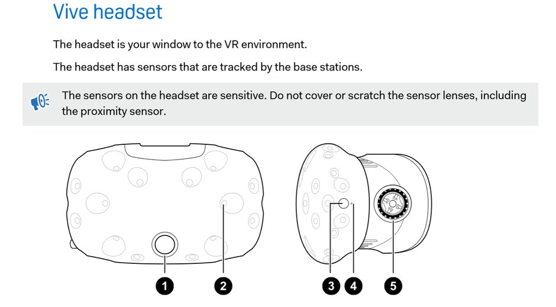
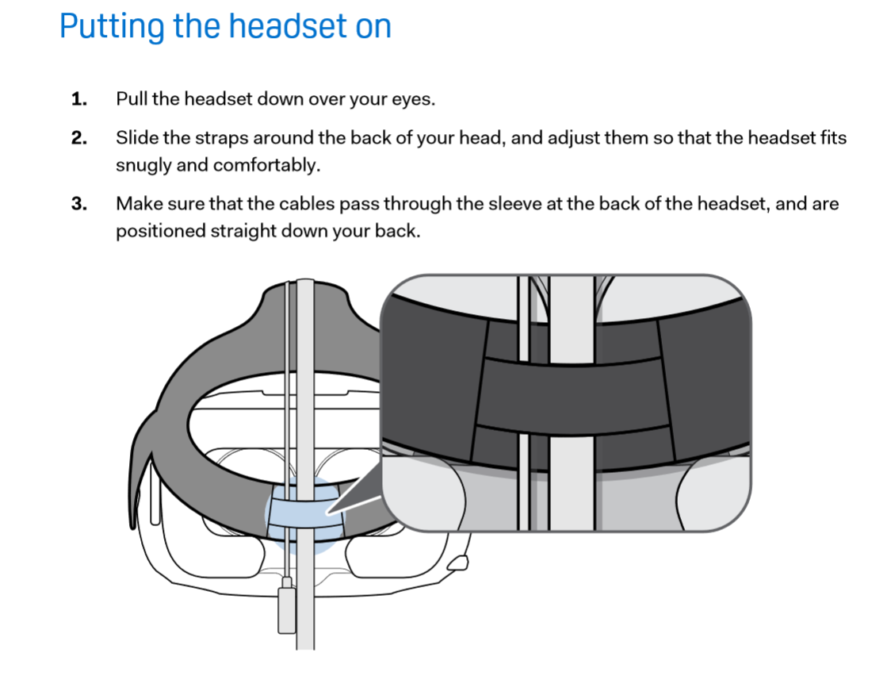
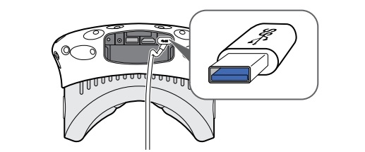
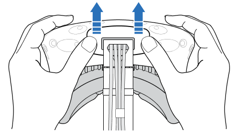
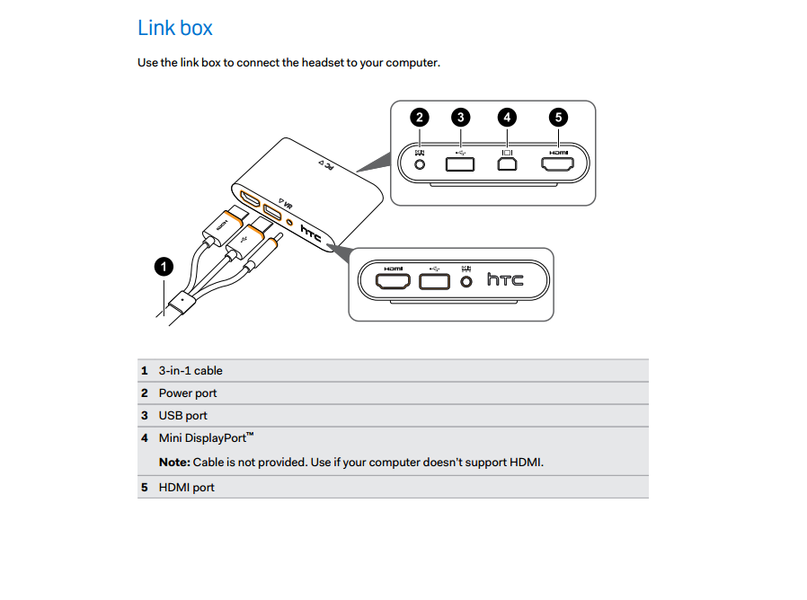

How To Set Up/Use the HTC Vive Headset
This page will guide you through how to set up, adjust, and use your new HTC Vive VR headset and controllers.
Equipment List
This is what you will find when you open the box:
- HTC Vive Headset (The headset is your window to the VR environment).
- Two HTC Vive Controllers (these are how you interact with ibjects in the virtual reality).
- Two HTC Vive Tracking Peripherals (how your movements in virtual reality are tracked).
Parts of the HTC Vive Headset

- Camera Lens
- Tracking Sensor
- Headset Button
- Status Light
- Lens Distance Knob
Step One

- Pull the headset down over your eyes
- Slide the straps around the back of your head, and adjust them so that the headset fits snugly and comfortably
- Make sure that the cables pass through the sleeve at the back of the headset, and are positioned straight down your back
To change the distance between the lenses, rotate the IPD (Interpupillary distance) knob. As you adjust the IPD, you'll see information displayed in the headset that indicates the current
distance between the centers of the lenses.
To change the distance the lenses are from your face, pull out each distance knob that are located on both sides of the headset, then turn them clockwise to adjust how close or far away the lenses are from your face. Once you have set the proper distance, push each knob back in to lock them.
Step Two

Plug in your USB cable so you can connect your Vive to third party devices. You can do this by following these steps:
- Push open the compartment cover to access the connector slots on the headset
- Plug in the USB cable to its corresponding slot
- Connect the third-party device to the USB cable end
- Replace the compartment cover
Step Three
Unplug the three in one cable (The 3-in-1 cable connects HDMI, USB and Power from the link box to the VIVE headset with all three cords coming together as one). To do this, follow these steps:

- Push open the compartment cover to access the connector slots on the headset
- Carefully pull the tab until the HDMI cable is unplugged
- Unplug the power cable and USB cable from the connector
- Replace the compartment cover
Step Four
Connect the headset to the computer using the link box
(the HTC Vive Link Box serves as a link between your Vive headset and computer to make the magic of virtual reality possible). To do this, follow these steps:

- Connect the power adapter cable on its corresponding port on the link box, and then plug the opposite end into an electrical outlet to turn the link box on
- Insert the HDMI cable on the HDMI port on the link box, and then insert the opposite end on the HDMI port on your computer's graphic card
- Insert the USB cable on the USB port on the link box, and then insert the opposite end on your computer's USB port
- Connect the 3-in-1 headset (HDMI, USB, and power) cables on the side with matching orange trims on the link box
To secure the link box in a permanent position, peel the covers from the mounting pad and firmly press one side of the adhesive surface on the bottom part of the link box, and then attach the link box on the area where you want it installed